Chapter 16 Geoms and Stats
You can go ahead and set a default theme for your plots
theme_set(theme_linedraw())The main type of plots we typically want to create in psychological science are:
Scatterplots
Bar graphs
Line graphs
Histograms
16.1 Scatterplots
We have already spent a good amount of time creating scatterplots using stat_smooth() and/or geom_smooth().
These two functions are essntially identical. In fact, many of the geom_ functions are just wrappers around stat_ functions.
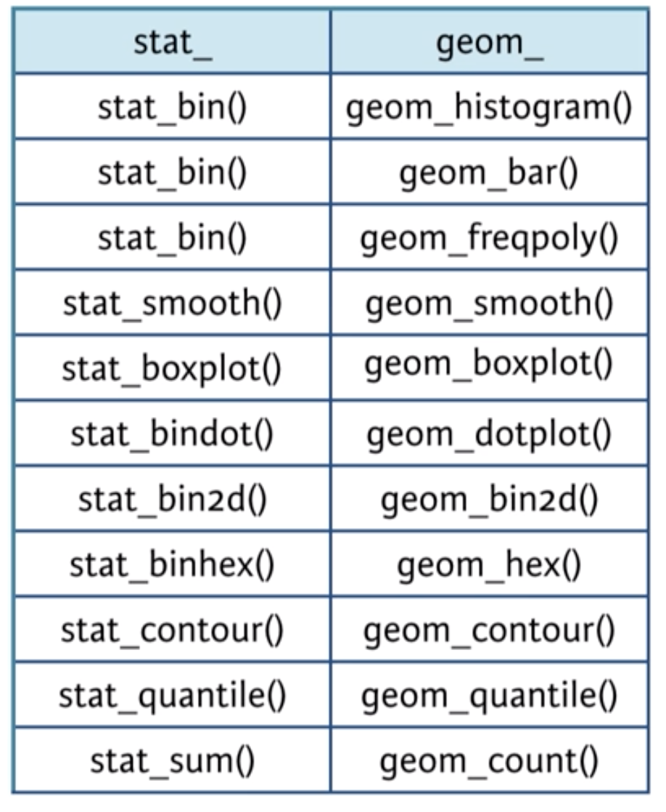
The scatterplot we created from last chapter is essentially an interaction plot. The interaction of Species x Sepal.Length on Sepal.Width.
ggplot(iris, aes(Sepal.Length, Sepal.Width, color = Species)) +
geom_point() +
stat_smooth(method = "lm", se = FALSE)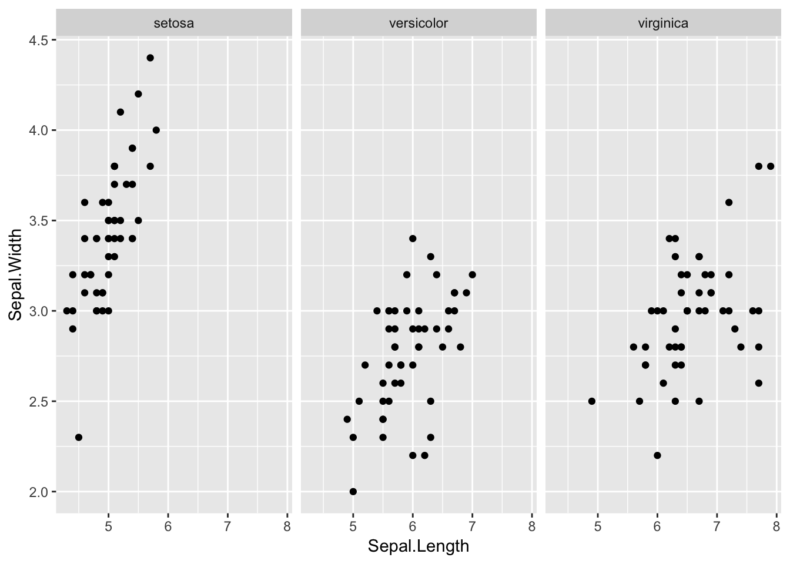
For modelling an interaction effect in regression it is easier to interpret if the lines extend to all possible values - not just across the values within a group.
We can do this by specifying the argument geom_smooth(fullrange = TRUE)
ggplot(iris, aes(Sepal.Length, Sepal.Width, color = Species)) +
geom_point() +
geom_smooth(method = "lm", se = FALSE, fullrange = TRUE)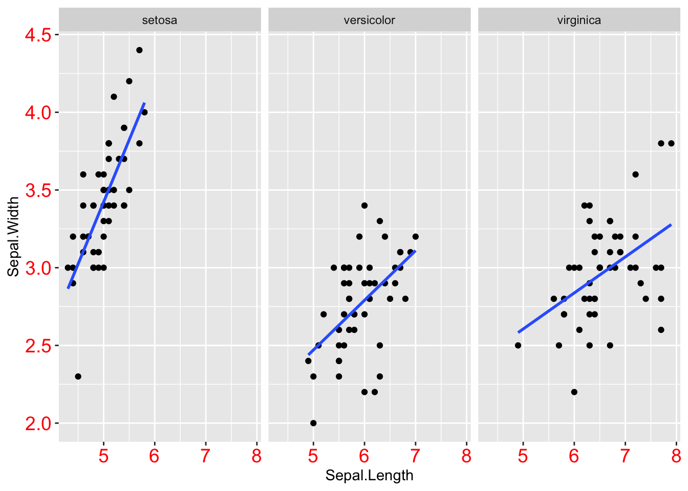
Now what if the moderator was a continuous variable and not categorical like Species? We would want to set the color aesthetic to be on +/- 1 SD on the mean. How would we go about doing this?
The answer is: It would be very difficult to do so. This is where the function plot_model() from the sjPlot package comes in handy.
16.1.1 Adding other geoms
There might be other geoms we want to add to a scatterplot. Let’s add some summary statistics to the graph. Specifically, a horizontal dashed line representing the mean on Sepal.Width and a vertical dashed line representing the mean on Sepal.Length. To make it more simple let’s only do this for Species == "setosa".
library(dplyr)
iris_means <- iris %>%
filter(Species == "setosa") %>%
mutate(Sepal.Width_mean = mean(Sepal.Width, na.rm = TRUE),
Sepal.Length_mean = mean(Sepal.Length, na.rm = TRUE))
ggplot(iris_means,
aes(Sepal.Length, Sepal.Width)) +
geom_point() +
geom_smooth(method = "lm", se = FALSE, fullrange = TRUE) +
geom_hline(aes(yintercept = Sepal.Width_mean),
linetype = "dashed", color = "red4") +
geom_vline(aes(xintercept = Sepal.Length_mean),
linetype = "dashed", color = "green4")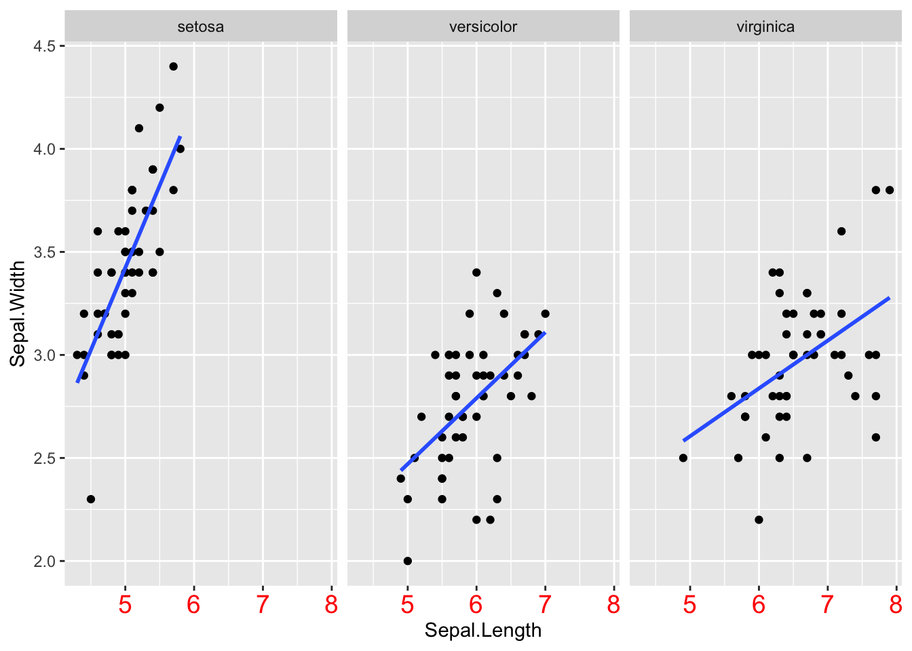
16.2 Bar Graphs
Bar graphs are the standard. They are ubiquitous across psychology. Basically everyone uses them. But in all honesty, Bar graphs SUCK!.
The worst part about them is that they hide the distribution of the raw data points (even when error bars are included). Even worse, too often you will see bar graphs with NO ERROR BARS! Yikes! A bar graph with no error bars tells you almost NOTHING!
To illustrate this let’s use a data set containing information on mammalian sleep patterns from the data set msleep.
head(msleep)## # A tibble: 6 x 11
## name genus vore order conservation sleep_total sleep_rem sleep_cycle
## <chr> <chr> <chr> <chr> <chr> <dbl> <dbl> <dbl>
## 1 Chee… Acin… carni Carn… lc 12.1 NA NA
## 2 Owl … Aotus omni Prim… <NA> 17 1.8 NA
## 3 Moun… Aplo… herbi Rode… nt 14.4 2.4 NA
## 4 Grea… Blar… omni Sori… lc 14.9 2.3 0.133
## 5 Cow Bos herbi Arti… domesticated 4 0.7 0.667
## 6 Thre… Brad… herbi Pilo… <NA> 14.4 2.2 0.767
## # … with 3 more variables: awake <dbl>, brainwt <dbl>, bodywt <dbl>Let’s plot the relationship between the different eating habits (vore) and total sleep time (sleep_total).
msleep1 <- filter(msleep, !is.na(vore))
ggplot(msleep1, aes(vore, sleep_total)) +
stat_summary(fun.y = mean, na.rm = TRUE, geom = "bar")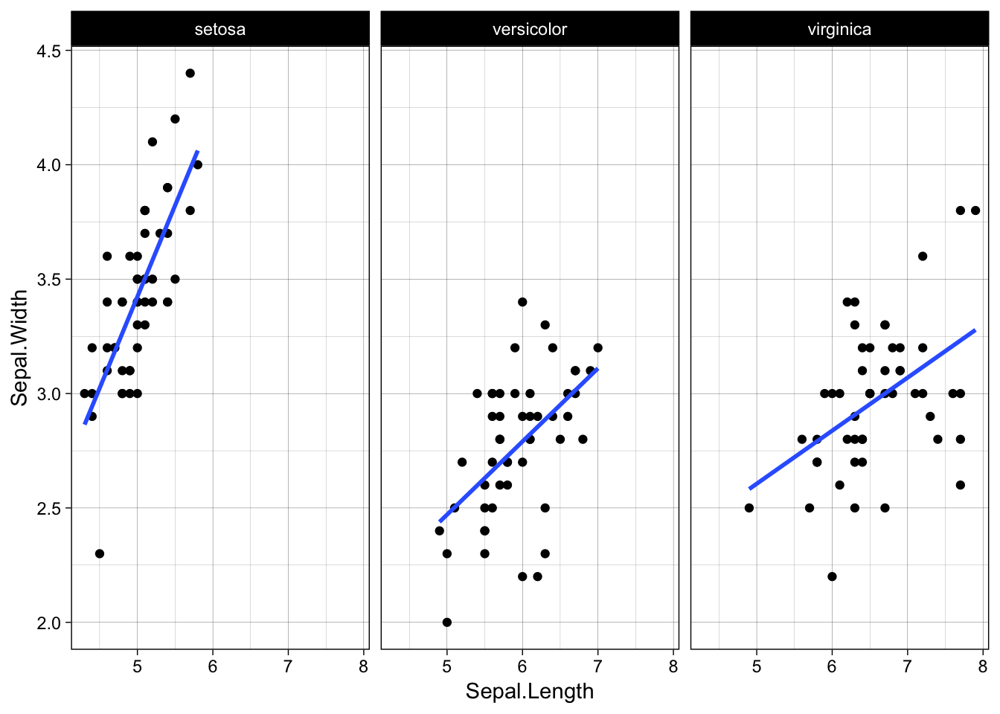
This only tells us what the means are. We have no idea about the distributions. Well for this reason people usually like to see error bars. Okay well let’s add error bars.
ggplot(msleep1, aes(vore, sleep_total)) +
stat_summary(fun.y = mean, na.rm = TRUE, geom = "bar") +
stat_summary(fun.data = mean_cl_normal, na.rm =TRUE,
geom = "errorbar", width = .2)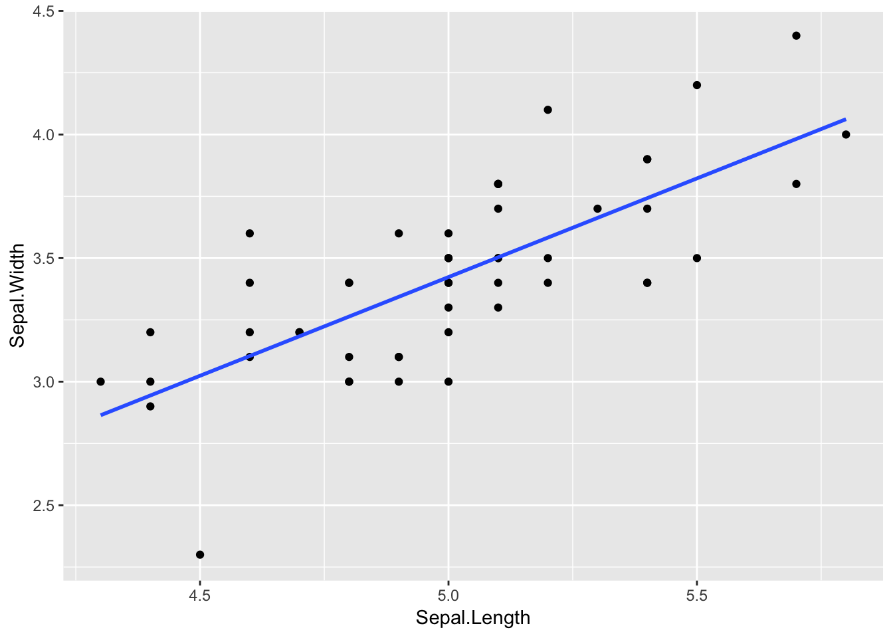
Okay better. But we still cannot see the underlying distribution.
Here is a crazy idea. What if we plotted the raw data points. Like we do with scatterplots! Whoa! What a concept
ggplot(msleep1, aes(vore, sleep_total)) +
geom_point()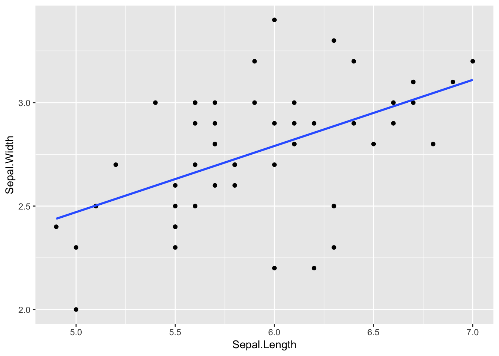
When plotting raw data points with categorical variables on the x-axis it makes more sense to jitter the points so they are not all just lying on top of each other.
ggplot(msleep1, aes(vore, sleep_total)) +
geom_point(position = position_jitter(width = .2))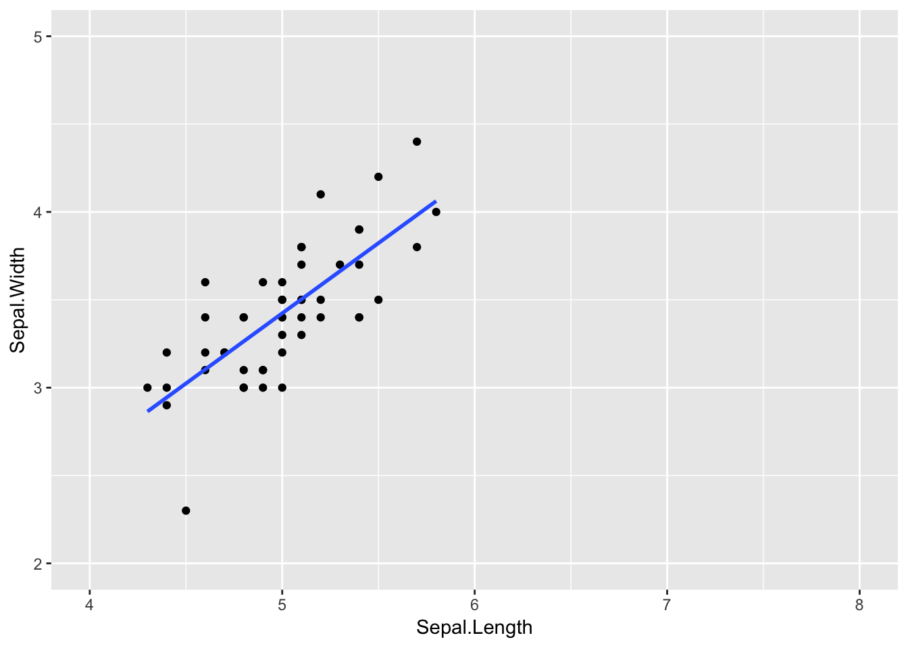
Wow! Does this give you a completely different picture than the bar graph with error bars? It does to me! Especially look at the insecti and omni eating habits. There is definitely a bi-modal distribution happening there.
From the bar graph with error bars, we might be fooled into thinking that the distributions for carni and omnie are pretty similar. But are they? Not at all!
THIS IS WHY YOU SHOULD ALWAYS PLOT THE RAW DATA POINTS
But means and error bars are also useful information so let’s add those
ggplot(msleep1, aes(vore, sleep_total)) +
geom_point(position = position_jitter(width = .2)) +
stat_summary(fun.y = mean, na.rm = TRUE,
geom = "point", color = "dodgerblue") +
stat_summary(fun.data = mean_cl_normal, na.rm =TRUE,
geom = "errorbar", width = .2, color = "dodgerblue")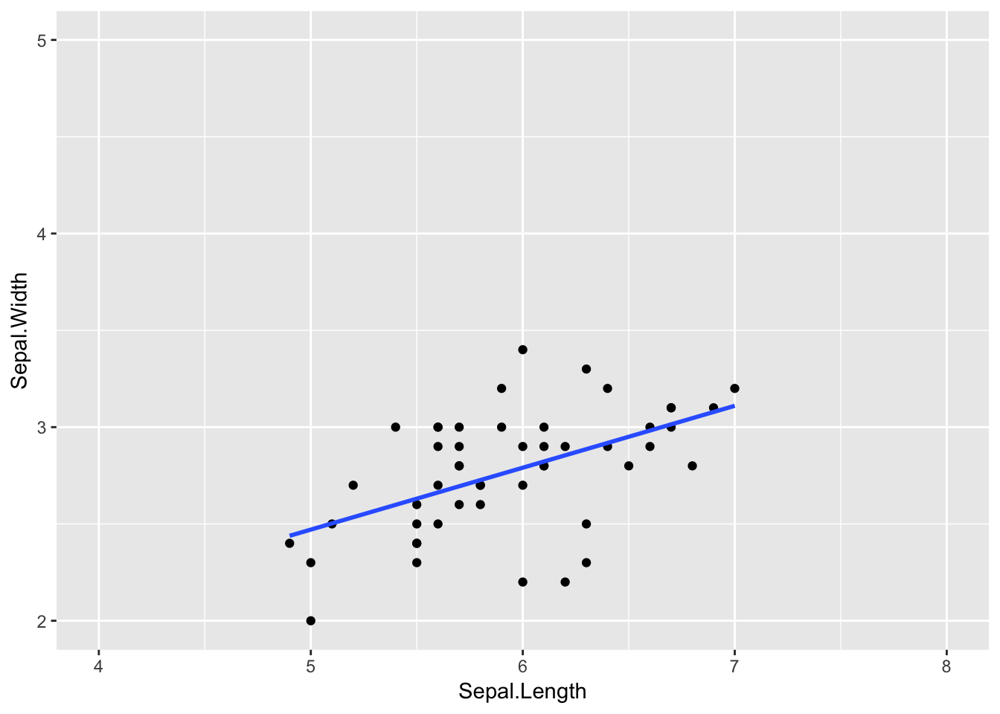
Another aesthetic option that is useful when we are plotting means and error bars ontop of raw data is the alpha aesthetic. This can allow us to make the raw data points more transparent, fade into the background a little more.
ggplot(msleep1, aes(vore, sleep_total)) +
geom_point(position = position_jitter(width = .2), alpha = .3) +
stat_summary(fun.y = mean, na.rm = TRUE,
geom = "point", color = "dodgerblue",
size = 4, shape = "diamond") +
stat_summary(fun.data = mean_cl_normal, na.rm =TRUE,
geom = "errorbar", width = .2, color = "dodgerblue")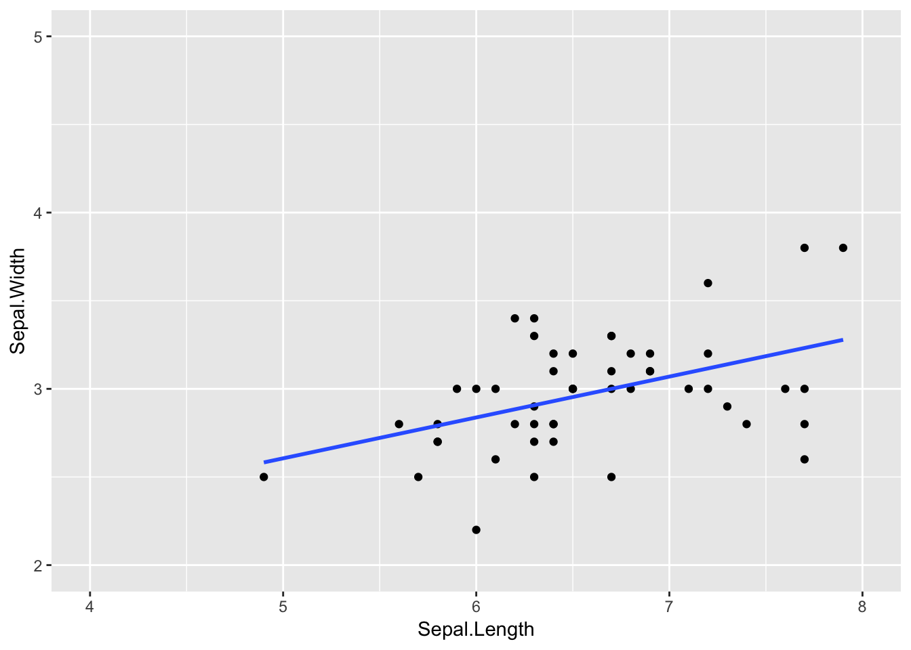
ggplot(msleep1, aes(vore, sleep_total)) +
geom_point(position = position_jitter(width = .2), alpha = .3) +
stat_summary(fun.y = mean, na.rm = TRUE,
geom = "point", color = "dodgerblue",
size = 4, shape = "diamond") +
stat_summary(fun.data = mean_cl_normal, na.rm =TRUE,
geom = "errorbar", width = .2, color = "dodgerblue") +
stat_summary(fun.y = mean, na.rm = TRUE, aes(group = 1),
geom = "line", color = "dodgerblue",
size = .75, shape = "diamond") ## Warning: Ignoring unknown parameters: shape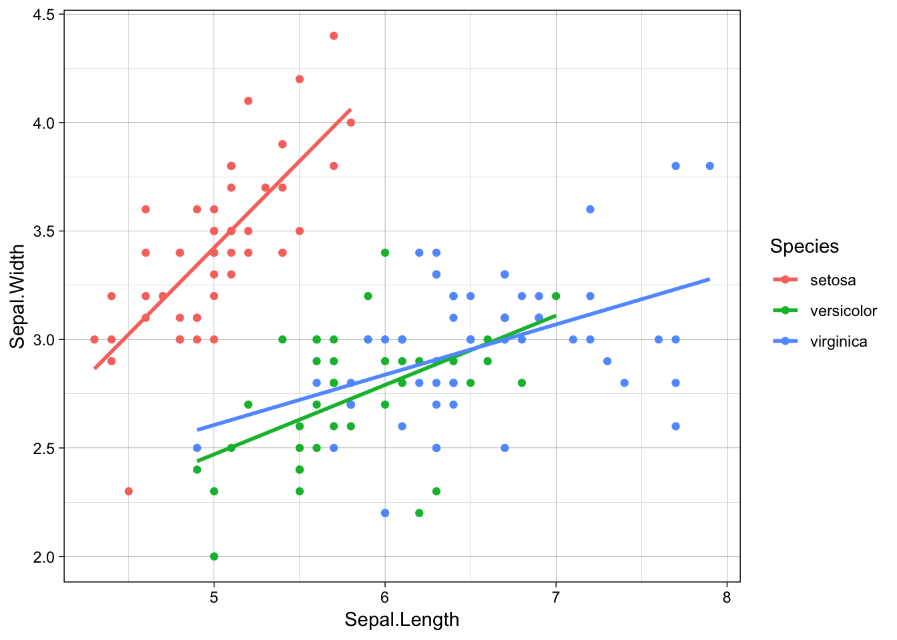
16.2.1 Multidimensional Bar Plot
library(tidyr)
iris.long <- iris %>%
mutate(Flower = row_number()) %>%
gather("Part", "Inches", -Flower, -Species) %>%
separate(Part, into = c("Part", "Measurement")) %>%
arrange(Flower, Species) %>%
select(Flower, Species, Part, Measurement, Inches)
head(iris.long)## Flower Species Part Measurement Inches
## 1 1 setosa Sepal Length 5.1
## 2 1 setosa Sepal Width 3.5
## 3 1 setosa Petal Length 1.4
## 4 1 setosa Petal Width 0.2
## 5 2 setosa Sepal Length 4.9
## 6 2 setosa Sepal Width 3.0ggplot(iris.long, aes(Measurement, Inches, group = Species, color = Species)) +
geom_point(position = position_jitterdodge(jitter.width = .2,
dodge.width = .7),
alpha = .1) +
stat_summary(fun.y = mean, na.rm = TRUE,
geom = "point", shape = "diamond",
size = 4, color = "black",
position = position_dodge(width = .7)) +
stat_summary(fun.data = mean_cl_normal, na.rm = TRUE,
geom = "errorbar", width = .2, color = "black",
position = position_dodge(width = .7)) +
scale_color_brewer(palette = "Set1")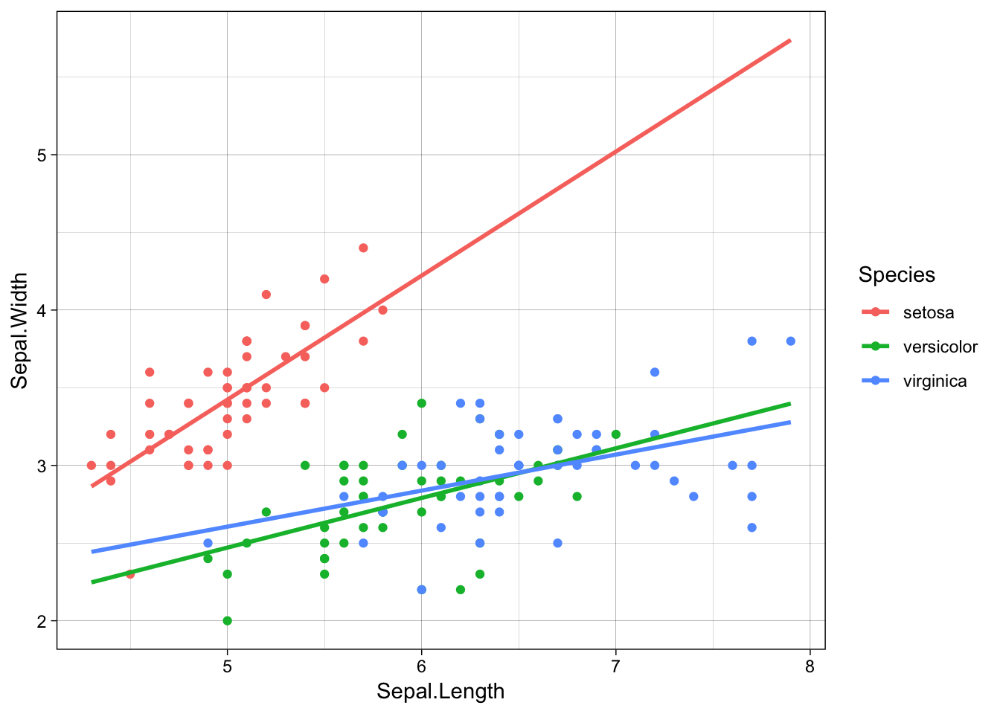